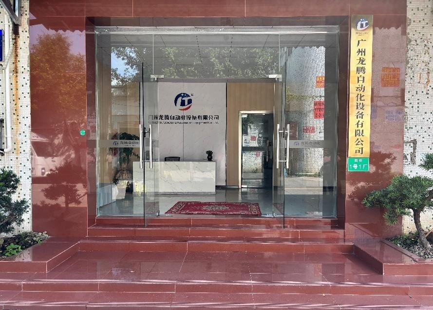
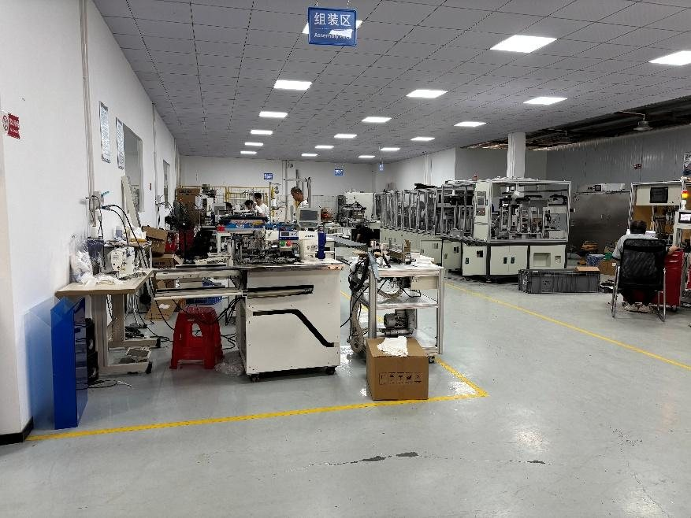
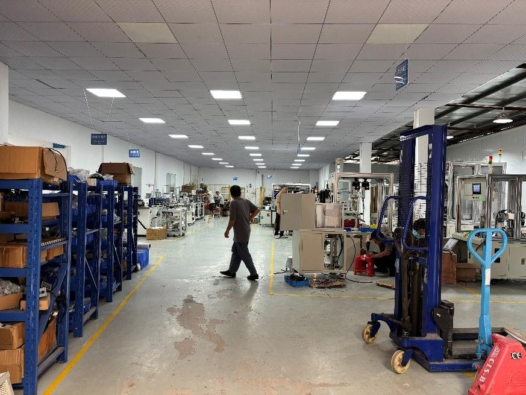
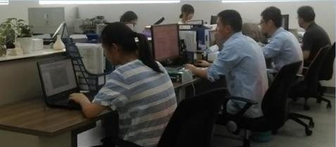
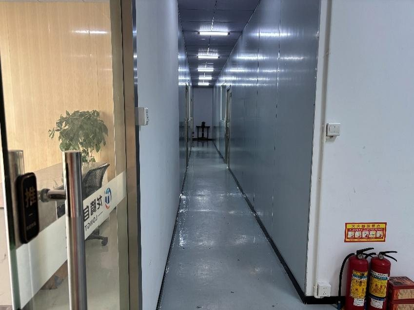
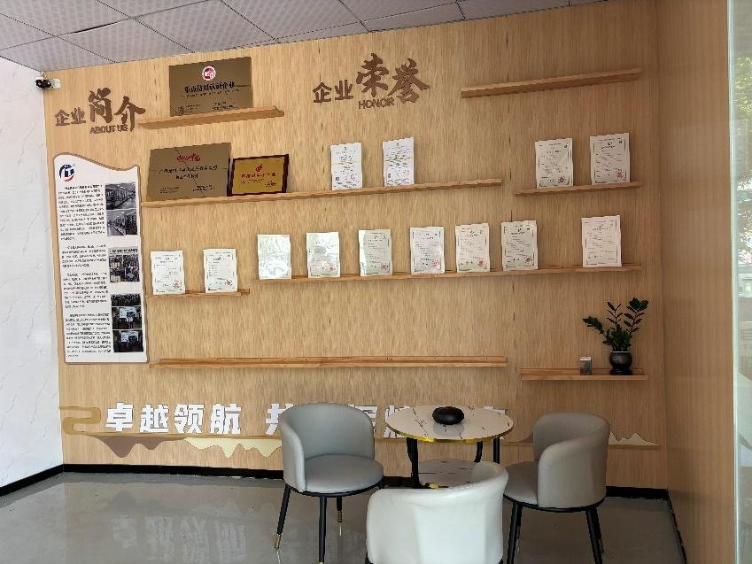

About Longteng Automation
Guangzhou Longteng Automation Equipment Co., Ltd. was founded in May 2019 in Panyu District, Guangzhou. The company registered its own trademark at the start and began as a design team; in September 2019 it opened its own production base in the Shibi industrial area and has designed and built its machines in-house since then.
We build fixtures, automatic assembly and test equipment, hot-stamping, pad-printing and silk-screen machines, appearance inspection systems and complete assembly lines for small appliances, cosmetics packaging and automotive parts, and more recently for medical, printing and packaging customers.
Longteng was recognised as a National High-Tech Enterprise in 2025 and holds nine granted patents.

Why work with Longteng
Industry experience
Years of automation experience; every machine is built to the customer's product.
Engineering strength
Mechanical design, electrical engineering and production teams under one roof.
Quality assurance
Selected suppliers and a factory acceptance test for every machine before it ships.
Careful installation
Installation technicians with over ten years' experience test the machine on site and train your operators.
After-sales service
A named contact for any question during use, plus remote diagnosis.
Our plant




